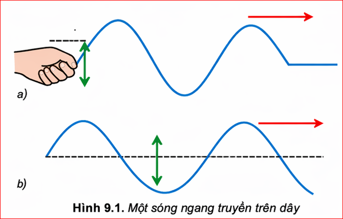
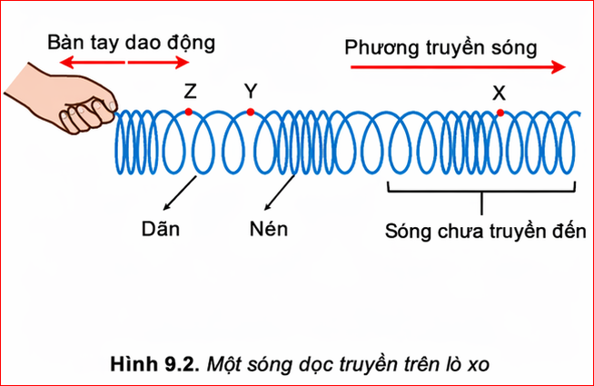
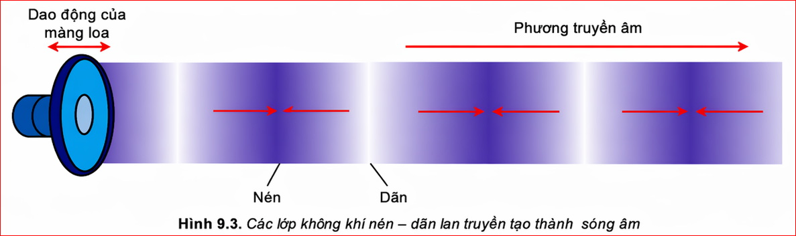
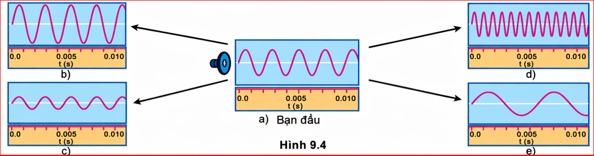

Trong thí nghiệm ở Hình 8.1 các phần tử nước tại O, rồi tại M dao động lên, xuống theo phương thẳng đứng, trong khi sóng truyền từ O đến M theo phương ngang.
Hình 9.1 mô tả một sóng ngang truyền trên dây đàn hồi. Hãy quan sát các mũi tên, từ đó chỉ ra phương dao động của các phần tử của dây và phương truyền sóng.

Trả lời:
- Mũi tên thẳng đứng (lên/xuống) chỉ phương dao động của các phần tử trên dây.
- Mũi tên nằm ngang chỉ phương truyền sóng.
=> Phương dao động vuông góc với phương truyền sóng.
Đặt một lò xo ống dài và mềm trên mặt bàn nhẵn. Dùng tay cầm một đầu lò xo và cho bàn tay dao động dọc theo trục của lò xo. Các vòng của lò xo ở sát bàn tay lần lượt bị nén rồi bị dãn. Nhờ có lực đàn hồi giữa các vòng lò xo mà các biến dạng nén – dãn lan truyền đi xa dọc theo trục của lò xo (Hình 9.2).

Dựa vào Hình 9.1 và Hình 9.2, hãy chỉ ra điểm giống và khác nhau giữa sóng dọc và sóng ngang.
Trả lời:
Trong thí nghiệm Hình 8.1, khi sóng lan truyền đến đâu thì các phân tử nước ở đó bắt đầu dao động. Năng lượng dao động mà các phân tử nước này có được là do sóng mang năng lượng của nguồn đến cho chúng.
Các phân tử nước chỉ dao động tại chỗ, quanh vị trí cân bằng của nó chứ không chuyển động theo sóng. Điều đó chứng tỏ sóng mang năng lượng mà không mang các phân tử nước đi theo.
Đối với sóng dọc trên lò xo thì năng lượng được truyền đi bằng sự nén, dãn liên tiếp của các vòng lò xo.
Mọi sóng cơ khác như sóng âm đều mang năng lượng đi xa theo cách như vậy.
Sóng dọc chạy trên lò xo là mô hình giúp ta hiểu được sự lan truyền và một số tính chất của sóng âm.
Nguồn âm dao động làm cho các phân tử không khí trên dao động theo phương truyền âm, các phân tử không khí dao động lệch pha nhau tạo nên các lớp không khí nén, dãn giống như ở lò xo. Các nén, dãn này truyền đi tạo thành sóng âm theo mọi hướng trong không khí. Hình 9.3 chỉ xét sóng âm truyền theo hướng Ox. Khi sóng âm truyền đến tai người làm cho màng nhĩ dao động, do đó ta nghe được âm thanh.

Như vậy, dù sóng âm không nhìn thấy nhưng ta lại có thể nghe được âm. Biên độ của sóng âm càng lớn thì biên độ dao động của màng nhĩ càng lớn, âm nghe càng to. Tần số của sóng âm càng lớn thì tần số dao động của màng nhĩ càng lớn, âm nghe càng cao.
Quan sát Hình 9.4 mô tả biên độ và tần số của âm qua dao động kí để trả lời các câu hỏi sau:

Trả lời:
Ánh sáng là sóng, mang năng lượng và truyền được trong chân không. Ánh sáng cũng có những đại lượng đặc trưng như chu kì, tần số, bước sóng và tốc độ truyền sóng. Trong chân không, ánh sáng nhìn thấy có bước sóng nằm trong khoảng từ \( 0,38~\mu m \) đến \( 0,76~\mu m \).
Âm nghe được có tần số nằm trong khoảng từ \( 16 \text{ Hz} \) đến \( 20 000 \text{ Hz} \).
Câu 1: Tại thời điểm mà sóng trên lò xo được chỉ trên Hình 9.2. Hãy xác định:
a) Sóng đã truyền được bao nhiêu bước sóng?
b) Trong các điểm X, Y, Z điểm nào là điểm chưa dao động?
Hướng dẫn giải:
a) Một bước sóng \( \lambda \) trên lò xo là khoảng cách giữa hai phần tử nén liên tiếp (hoặc hai phần tử dãn liên tiếp). Đếm trên hình từ điểm bắt đầu (tay) đến hết vùng có sóng, ta có khoảng 2 bước sóng hoàn chỉnh.
b) Sóng truyền từ trái sang phải. Vùng bên phải điểm X được ghi "Sóng chưa truyền đến". Do đó điểm X nằm trong vùng chưa có sóng truyền tới nên điểm X là điểm chưa dao động. (Điểm Y đang ở phần nén, Z đang ở phần dãn).
Câu 2: Dải tần số mà một học sinh có thể nghe thấy từ \( 30 \text{ Hz} \) đến \( 16000 \text{ Hz} \). Tốc độ truyền âm trong không khí là \( 330 \text{ m/s} \). Tính bước sóng ngắn nhất của âm thanh trong không khí mà bạn học sinh đó nghe được.
Hướng dẫn giải:
Ta có công thức liên hệ: \( v = \lambda \cdot f \Rightarrow \lambda = \frac{v}{f} \)
Vì vận tốc truyền âm \( v \) không đổi, nên bước sóng \( \lambda \) tỉ lệ nghịch với tần số \( f \).
Để bước sóng ngắn nhất (\( \lambda_{min} \)), thì tần số âm phải lớn nhất (\( f_{max} \)).
Theo đề bài: \( f_{max} = 16000 \text{ Hz} \).
Bước sóng ngắn nhất là:
\( \lambda_{min} = \frac{v}{f_{max}} = \frac{330}{16000} = 0,020625 \text{ (m)} = 2,0625 \text{ (cm)} \)
Bài 1: Một nguồn phát sóng dao động với tần số \( 50 \text{ Hz} \). Sóng truyền đi với bước sóng bằng \( 0,4 \text{ m} \). Tốc độ truyền sóng là bao nhiêu?
Giải:
Áp dụng công thức liên hệ giữa vận tốc, bước sóng và tần số:
\( v = \lambda \cdot f \)
\( v = 0,4 \cdot 50 = 20 \text{ (m/s)} \)
Đáp số: 20 m/s.
Bài 2: Sóng âm truyền trong nước với tốc độ \( 1500 \text{ m/s} \). Một máy phát sóng âm dưới nước phát ra sóng có chu kì \( 0,002 \text{ s} \). Khoảng cách giữa 2 điểm gần nhất trên cùng một phương truyền sóng dao động cùng pha bằng bao nhiêu?
Giải:
Khoảng cách giữa 2 điểm gần nhất trên cùng một phương truyền sóng dao động cùng pha chính là 1 bước sóng \( \lambda \).
Áp dụng công thức: \( \lambda = v \cdot T \)
\( \lambda = 1500 \cdot 0,002 = 3 \text{ (m)} \)
Đáp số: 3 m.
Bài 3: Tại sao khi ta đứng ở xa một sân khấu ngoài trời, ta lại thấy ca sĩ mấp máy môi trước, sau đó mới nghe tiếng hát?
Giải:
Hành động mấp máy môi của ca sĩ được ta nhìn thấy nhờ sóng ánh sáng truyền đến mắt ta. Tốc độ truyền ánh sáng trong không khí rất lớn (khoảng \( 3 \cdot 10^8 \text{ m/s} \)), gần như tức thời.
Tiếng hát là sóng âm truyền trong không khí, có tốc độ chậm hơn rất nhiều (chỉ khoảng \( 340 \text{ m/s} \)).
Do đứng xa, thời gian sóng âm truyền đến tai lớn hơn thời gian ánh sáng truyền đến mắt, nên ta thấy hình ảnh trước khi nghe âm thanh.